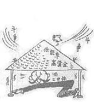
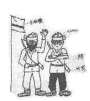
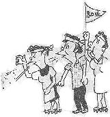
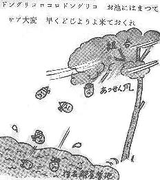
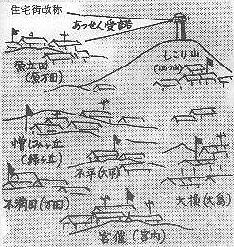
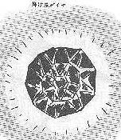

|
風刺前線
昭和35年、三池争議時、警備本部が出していた陣中新聞の連載漫画「三池炭労争議警備マンガ日記 風刺前線」を
同年10月、熊本県警が一冊の本にした。そこには、前線で警備に従事した部隊員の苦渋に満ちた労苦の想いが、昭和
35年3月27日から9月30日までの188日分、1コママンガ日記として収められている。以下はその「風刺前線」から抜粋
したものである。
 編集のことば
編集のことば
昭和35年3月27日、我々は世紀の大争議といわれている三井三池争議の警備に出動しました。熊本県警はその総力を
挙げてこの争議に対処し、県警はじまって以来の警備陣を敷き、出動した警備警官はややもすれば軌を越えようとする
争議行為を日夜見守りつつ必死になって不法行為の防止、炭住街の治安確保に努力を続けてきました。たけなわの春を
見送り、炎熱と闘い、いつしか秋風の吹く頃を迎えました。思えば長い、そして苦難に満ちた勤務の連続でした。陣中
新聞として発行された「やまの灯」に、防犯課勤務のまつなが君が、警備警察官の哀歓と三池争議の推移を見事に捉え
て漫画として連載してくれました。
三池労組も中労委あっせん案受諾にふみきり、四ツ山に、緑ケ丘にようやく平和の光が見え始めています。このとき
にあたり、苦しかった警備勤務を笑いの中に偲ぶ思い出のよすがにもと、やまの灯に連載されたまつなが君の漫画を一
冊に集録しました。
警友各位の心に、いささかでも思い出の灯をともすことになればしあわせに存じます。
序文
三池争議の警備は、県警察の大きな試練であった。立場の相違からくる必然的な摩擦や、労働者相互の紛争など随所
に発生し、労働争議に関連する警備は戦後における警察の大きな重荷となっている。史上最大といわれたこの争議は、
1200人の人員整理の問題であるだけに、その規模の大きさ、対立の激しさ深刻さなどが、かつてその比をみないものと
なり、警備にあたる警察官はその立場の困難性を身をもって体験させられた。
その荒みがちな隊員に明るい笑いとなぐさめをもたらしたまつなが君の蔭の力は大きい。画・文ともに面白く、生々
しい体験の記録であるところに特異性があると思う。この寸評が読者各位の三池争議に対する理解の一助ともなればし
あわせと思っている。
作者
このたび私の漫画が一冊にまとまりました。苦しく、永い警備勤務の間に、夜更けの荒尾警察署の道場の一隅で毎日
描きつづけた寸評漫画。一人の力ではどうにもならない大きな力に、人間精一杯の気持を訴えようとした百数十日でし
た。警友のみなさんのご声援を心から感謝いたします。
３月２８日
前田鉄工所の工場内では鉄板の上に毛布2枚を敷いて隊員が寝ていた。時価にすれば豪勢なものだろうが、とても安眠
できる代物ではない。外は雨。
３月２９日
33年の1月、三池港に入った外国船はホーベルという1分間に23ｍの炭層を削る近代兵器を輸入した。三池の低能率を
一挙に上昇させようとするものなのだが、サテ、組合員はホーベルで首を締められてはと自衛サボの戦術をとって来た。
３月３０日
荒尾署の板張り道場に荒むしろを敷いての仮眠。Ｍ巡査は夜中出動の夢を見て手探りで鉄帽を捜したが、ツルツルと
したいかにもそれらしいものが手に触った。そのまま引き寄せると、その鉄帽は「アイタ」と言う。驚いて見ると、何
とＴ警部補のはげ頭であった。
３月３１日
会社側から言わせると生産阻害者、労組から言わせると職場活動家という奇怪な人物。ものは見よう、聞きよう、イ
デオロギーの相違が根本か？
４月１日
労組はこの頃警官隊のキンを狙っていると伝えられた。一番大切な土産をつぶしちゃ帰れない。
４月２日
炭住街の子供たちも争議に無関心ではない。ストごっこが始まる。全くお互い泥だらけになるというのに。
４月３日
三池の闘いは総資本対総労働の闘いといわれる。この中にあって警察も、総警察力を発揮しなければならない
４月４日
血圧の高い隊員は、ここの生活は全く地獄。食事療法も出来ず、キンチョウの連続、夜は眠れない。
４月５日
「去るも地獄、残るも地獄」。火野葦平はここの組合本部の上に掲げられた標語を見て、「黒色の悲劇」と言った
という。闘えば本当に極楽へ行けるのかな？
４月６日
闘争モグラ。何でもごねりゃいい。立派な時代にヨ、穴の中にばかり入っていられるかい。鉢巻き、鉢巻き、この
鉢巻きがオイラの仲間のシルシダゼ！！

４月８日
三池の熱風は低能率1人12.3トンと高賃金でさすがの三井さまも・・・。
４月９日
四ツ山坑正門前で重傷を負った今村、林田両巡査は10日を経過したが、数日したら退院の予定。あのどさくさ乱闘で
殴った奴も判らない。悲しいかな民衆の公僕。
４月１２日
「山の灯」隊内広報紙として誕生す。一日も早くヤマに明るい灯がともるように。
４月１４日
三池の組合と主婦会で開いた学習会は296回。延べ2万8千人が受講している。そのうち192回が向坂教室である。この
学習活動の理論武装から、組合活動家という優等生が生まれた。
４月１５日
この日で鑑識班の撮った写真は実に1万7千枚に達した。出動出動でパチリパチリ。採証班の仕事はあとでものを言う。
４月１６日
三池労組は鉄の団結を誇示している。しかし、自由を求めるはずの彼らに真の自由はあるのだろうか。新聞もある
特定以外のものは読めないなどと聞けば・・・。
４月１７日
どれが本当の日本人なのだ？
４月１８日
陣中見舞いにフンドシ100枚、四ツ山上区婦人会から。男性が無精なのをよく知ってござる。有り難く頂戴します。
４月１９日
炊事班は約千名の隊員の台所を預かって毎朝早くから飯を炊き菜を作った。ある事務吏員、飯炊きではもう女房にも
負けないと自信満々。
４月２０日
小学校に入学した可愛い1年生が立番中の道を手を振って通っていく。そうだ、うちの子も今年から1年生だった。
警備勤務の忙しさについ忘れてしまっていたが、毎日元気で学校に行っているだろうか？
４月２１日
家に居れば亭主関白もここでは女中以下。一番面倒なのは三度の食事。何とか一回で腹の空かないものは出来ないものか。
４月２２日
3月29日四ツ山鉱正門前で、第一労組員久保清さんが暴力団に刺殺された。捜査中の本村組Ｋ（24）がこの日殺人の犯行
を自供した。
４月２３日
労組の歌「炭掘る仲間」、なかなかいい歌である。が、炭は掘らずにデモする仲間にだけなっていないか。
４月２４日
荒尾、大牟田は警官の街と化した。そのおかげか、窃盗が1件も発生しない。泥公が夜逃げしたのだろう。
４月２５日
森の都熊本市ではいま天守閣が着々とその偉容を現しつつある。荒尾では毎日毎日雑兵たちのデモ。こんなところに
城があったら高見の見物だがナア・・・
４月２６日
この日の出動回数実に16回。社宅街はけんけんごうごう。まるで野外の深夜ジャズ喫茶だ。騒音防止法という法律が
あったはずだが。
４月２７日
荒尾市近郊の小岱山の土が陶土に適しているところから、小岱焼きが作られている。小岱焼きの特徴は「サビ」にある。
４月２８日
ちょっとしたケガ人があると、さも大けがのように見せかけ、大勢で上に担ぎあげ、会社から大金を払わせる、という話。
頭の進んだ人たちは違うネ。
４月２９日
よく眠る奴ほどいびきをかく。早くいびきをかいた方が勝ち。
４月３０日
各県からのオルグは三池にやってきて各社宅に泊まっている。その費用は700円で、そのうち300円は食費として、
泊めている労組員の収入だそうだ。
５月２日
一国一城の主とはいっても、たった一畳ではやっと体を横にするだけで精一杯。しかしこの頃、畳が敷かれて
その有り難さが判る。
５月３日
子供連れの人たちが連休を利用して旅行に出かけていく。我々は労組員の心ない罵倒を聞き、黙々と任務についていた。
５月４日
月が出た出た月が出た ヨイヨイ 三池のヤマの上に出た あんまり争議が長いので 三日月さんも涙顔 サノヨイヨイ
ああ平和なヤマで唄った炭鉱節が懐かしい
５月５日
三池の青年特別行動隊の攻撃はひときわ目立っている。なにか一昔前の特攻隊を思わせるが、思想というものが人間を
こんなに一途にさせるものなのか。
５月６日
春雷が毎日のように鳴る。不気味な上空。しかし、地上の空気もまた不気味。
５月８日
労組の主婦の中には相当派手に活躍する人があって、そのために新労の主婦はイジメられ通しである。中には傷害を
与えた人もあり、警備本部は遂に暴力主婦の逮捕に踏み切った。
５月９日
大島社宅の入口に大書してある看板曰く、「会社の犬（警官）、犬小屋に帰れ」と。言論は自由であろうが、人を
傷つける言葉を臆面もなく大道に掲げる。民主主義を謳い人権問題に関心を持っている労働組合の行き方であろうか。
５月１０日
金魚の名産地長州町が近くにある。赤い金魚は美しいと思うが、毎日赤旗ばかり見ていると赤い金魚までイヤになってくるヨ。
５月１１日
バードウィーク。おまわりさんには日曜も祭日もない。せめて争議が済んだら、巡査の日でも作ってほしい。
５月１２日
警察官は争議行為についてはレフェリーであると言われている。そのレフェリーに向かって攻撃を仕掛けてくるとは
常識を逸脱している。
５月１３日
全困連（全学連）の歌ー命惜しまん全困連は 五つボタンでレンガと小石 きょうもデモデモ赤旗振って 赤い血潮を流したい

５月１４日
ホッパースタイル。まるで強盗犯人か、殺人犯人の服装である。この日、大島社宅で第一労組員を逮捕したが、
これを妨害した7名も現行犯逮捕した。県警初めての実力行使。
５月１５日
三川坑ホッパーに対する立入禁止処分執行命令処分が出て3日目の12日、板塀を作ろうとする会社と、それを
阻止しようとする旧労は6000人を動員して人垣を作った。
５月１６日
税金泥棒ー何回となく聞かされる言葉。泥棒呼ばわりされたのは生まれてはじめて。馬鹿馬鹿しいが馬耳東風とはいかない。
５月１７日
きょうで争議は113日を数えた。かつて28年の争議に「英雄なき113日の闘い」として勝利を得た労組も、今度の
闘いはまだまだ前途は程遠いようだ。
５月１８日
交代で家に帰れることは大変な喜びだ。しかし機動隊などはずっと現地に行ったままである。この日新聞はルバ
ング島から15年振りに生還した伊藤軍曹他1名の話を報道していた。
５月２１日
警備勤務が長引くにつれて、ヒゲを生やす隊員も多くなった。鹿児島部隊のＨ部長のヒゲはそれはそれは見事なものだった。

５月２２日
荒尾に来て一番驚くのは、炭婦連の主婦達の言動である。男勝りの女傑が我々の姿を見ると実に口汚くののしる。
これが女性の姿だろうか。
５月２３日
この頃は第一労組員の八つ当たりは激しく、少しでも自分達に都合の悪いことであれば、見境なくかみついてきた。
５月２５日
たまに交代で帰宅しても土産もない。着たきり雀のおまわりさん。
５月２６日
「安保反対」のデモが東京で起こり波紋が広がっている。どこもここもデモ騒ぎで、まるで革命前夜だ。
５月２７日
5月の炭住街風景。炭住街は初夏の陽に包まれているが、第一労組と第二労組とでは5月の薫る風も、逆方向に吹くらしい。
５月２８日
税金泥棒、犬。三池の主婦達のイバシサには、流石な警官隊もタジタジ。何と言われてもじっと我慢、我慢。
今にわかる、今にわかる。
６月１日
新聞の折り込み広告で、新旧労組は毎日のようにＰＲ合戦を演じている。その中で我々に、すぐ三池を帰れと
時刻表を送ってきた。その頃急行ハト号が廃止された。
６月３日
新労は就労をするため人工島を利用して船で労組員を輸送していたが、遂に第一労組はこれを阻止しようと船舶を
雇い入れ海上ストを決行した。
６月４日
三角署の金田技術吏員は警備出動以来活躍していたが、過労のため6月1日永眠された。争議以来初めての殉職者である。
６月６日
荒尾署管内でも各所に散在する社宅街。ここには新労と旧労の対立。どうにもならない悪感情が充満している。
新労が疎開先から帰ると直ちに300人位集まって「説得デモ」と称する精神的暴力を加える。
６月７日
第一組合員の家族ぐるみ闘争の第一線主婦会のおカミさん、よくあんな悪口が言えるものと感心したりあきれたり
するが、我々の背後には明るい声でしっかりと叫ぶ妻や子がいる。
６月１０日
総評は大牟田市で臨時大会を開いた。その頃東京ではアイクの日本訪問を巡って全学連を主体とした大変な
大衆デモとなり世情騒然としていた。
６月１１日
総評オルグが三池にも大変な数に増えた。その負担はみんな労組員にかかってくる。三池争議の本質は総評に
よる「安保反対」にいつの間にかすり替えられていた。
６月１２日
ホッパー死守に労組員、オルグなど2万人を集めた。太田議長はホッパーパイプを貰ってご満悦。
６月１３日
「秘境ヒマラヤ」という映画が上映されているが、これに劣らず三池の秘境ぶり。篭城中の第二組合員に郷愁を
誘う戦術か、裸デモ。
６月１５日
新労の婦人が風呂に行くと、ものすごく湯が熱くなる。たまらず上がろうとすると4，5人の第一組合員の婦人が
これを取り巻き、ののしりながらあっちを触り、こっちを触る。裸のまま立ち往生。
６月１６日
熊本県警始まって以来の難関にブチ当たった。荒尾で右足をとられ、左足は下釜ダム問題がそろそろ我々の出動を
必要とする情勢になった。
６月１８日
東京国会議事堂は遂に流血の惨を現出した。全学連など数万の群衆が議事堂に乱入。アイクは遂に訪日を取り止めて
アメリカへ帰ってしまった。
６月１９日
国会内での全学連と警官隊の衝突で遂に樺美智子さんが死亡した。死因は圧死であると発表されたが、何か警官隊に
よって殺されたかのように逆宣伝をするものも多い。冷静な頭に早く立ち戻ることが必要だ。
６月２０日
社会党は安保改正の強行採決を不満として全員辞表を取りまとめたが、けっこうな議員商売に未練が残ったのか
とうとうその辞表をすぐにまた撤回してしまった。
６月２４日
警備勤務のひとときフッと考えることがある。何故人間同士こんなに憎しみ合わなければならないのか。
６月２６日
全学連はきょう共産党本部にデモをかけて党員との間に格闘が演ぜられた。世論もやっとその跳ねっ返りぶりに
困惑しその行動を非難するようになった。
６月３０日
下笠の蜂の巣砦では室原氏が相変わらず頑張っている。しかし同じ闘うにしてもユーモアもあり、人間的でもあり、
この城の主人には赤旗はあまり似合わない。
７月１日
争議はどこまでもぬかるみの道をあてもなく続いていく。石が粉砕されるか。車が壊れるか。泥をひっかけられるのは警官隊だ。
７月４日
韓国政府は李ライン付近で盛んに日本漁船を捕獲した。三池争議では、人工島からの入坑を阻止する第一労組の
船と第二労組・会社側の争いが海上ピケという名のもとに行われている。
７月８日
三池はオルグの街。全国から来ているオルグは常時２千人といわれている。警察官も九州はもちろん、山口、広島
などからも応援に駆けつけているが、まだまだ数だけなら労組には及ばない。元警官に赤紙でも出すか。
７月９日
いま人工島上陸をめぐって第一労組と第二労組は花火の水平射撃、投石など海戦さながらの攻防戦を催している。
７月１０日
いまの日本を眺めると、問題が多すぎる。あまりにも騒然とした日本。こんな時、立派な政治家、救世主が現れないものか？
７月１１日
荒尾から帰って交番に立つと、いままで民警一致をスローガンとしてすすめてきた我々の考え方も怒声と罵声に
洗脳された為か、全部が鉢巻姿の労組員に見えて困る。
７月１３日
岸首相は相次ぐ暴動事件に手を焼き治安対策の強化を表明した。お巡りさんを国民の憎悪の的にするような対策はゴメンだ。
７月１５日
早くも初盆が廻って来た。久保さんの殉難碑は四ツ山坑正門前に立っている。
７月１７日
総裁公選で池田新総裁が誕生したが、会場を出ようとする岸首相を暴漢が襲って重傷を負わせた。
デモ鎮圧警官サヨウナラ。傷の痛さもよく判りました。
７月１８日
三池は今次闘争の最大のヤマと言われる事態に突入した。ホッパーの仮処分に対して労組員は各オルグの応援
と共に約2万人を集めて死守しようとした。
７月１９日
「税金泥棒〜」「安保反対〜」「ポリ公帰れ〜」、セミはきょうもやかましく鳴き立てている。夏はいよいよ本格的だ。
７月２０日
「貧乏人は麦飯を食え」の放言で有名な池田新内閣誕生。その麦飯でも腹一杯食べさせてほしい。貧乏警察官より。
７月２１日
ホッパーを死守しようとする労組員2万、これに対する警察官1万5百名、あわや流血の大惨事が起ころうとしたが、
石田労相の仲介で一触即発の事態は免れた。
７月２２日
全学連30数名が三池争議応援のため大牟田市にやって来た。この恐るべき学生群は果たして三池で何を企図して
いるのか。遂にきょうは大牟田警察署前で警備の福岡県警機動隊と衝突、多数の検挙者を出した。
７月２３日
石田労相は会社、労組の中に入り流血の惨を引き起こさぬよう一時休戦に成功したが、現地の意見は応じられ
ないとする勢いを見せている。
７月２６日
初めての婦人大臣中山マサ女史。男まさり。男まさりなら三池主婦会にはゴマンとおりますゾ。
７月２８日
「あつせん案」の提示まで会社と労組の陳情合戦はし烈だ。
７月３１日
総評の太田議長が辞意を表明した。部外の我々にその真意は判ることではないが、出身労組宇部窒素の組合組織が
動揺してきたことが原因であろうか。
８月４日
総評第15回定期大会が開かれ正式に社会党を支持することに決定。何としても総評は350万を誇り、社会党は
まだ大政党とは言えない辛さがある。
８月５日
アフリカでは黒人国が誕生しつつある。コンゴ共和国では白人排斥の火の手をあげていま大変な騒ぎである。
８月６日
今年も母親大会が開かれる。県婦人連は母親大会の真の意義について、かねてその所信を表明していたが、
大会が新安保反対を盛り上げるという点に不満を示した。
８月１２日
遂に第三次中労委のあっせん案が提示された。「自発的退職」。労組にとってはやはり手厳しいものではあるが、
何人が考えてもこれ以上のあっせん案は出まい。
８月１３日
三池の労組員のうち指名解雇者は自発的に退職と出たあっせん案。このあっせん風に尚闘いを挑むか？

８月１９日
スト中の労組員に夏季手当が支給された。持つべきものは友、ありがたいことだ。
８月２０日
炭労臨時大会が開かれ、執行部はあっせん案受諾の基本方針を打ち出した。その理由は組合組織の再点検にあるという。
８月２１日
政府は炭坑離職者に対する対策として荒尾に総合職業訓練所を設けた。
８月２２日
三池第一労組は主婦会を含めた逆オルグを炭労代表者会議に上京させたが、執行部の受諾の線が強く、
さしもの猛暑連もこのところションボリ。
８月２３日
炭労代表者会議は三度延長。受諾か拒否か結論は出ない。
８月２６日
何故台風が九州を敬遠するのかって。やはり台風も、大衆争議のこわさを知っているのだろう。
８月２７日
大牟田警察署前にさがっていた三池争議特別警備本部の看板が降ろされ、鹿児島、佐賀、大分、宮崎、
長崎、各県警の隊員がそれぞれ勤務地へ帰って行った。
８月２９日
8月31日は「二百十日」である。やがて1ヶ月の整理期間が迫っている三池労組。9月10日までのあっせん案拒否を
最後の闘いとして不安な気持ちで山もとの動きを見つめている。
９月２日
物価は高騰を続ける気配。花火を上げてくれなければまだマシさ。
９月３日
炭労大会がいよいよ再開された。九州勢は6割までがあっせん案拒否。やはり、九州男児は強いゾー。
９月５日
三池労組は炭労大会の再開に伴い、受諾意見を封じるためオートバイの機動隊など逆オルグ団を東京へ派遣した。
９月７日
この日炭労大会で満場一致、あっせん案による事態収拾を決定した。
９月８日
事態収拾を決定した炭労は三池労組の職場闘争を批判し、実力行使という大衆闘争に水をかける形となった。
９月９日
総評・太田議長の出身労組の宇部窒素は第二組合が全労を背景に力を増してきた。一方、三池をめぐる組織の攻防は、
総評対全労の闘いとなってきた。
９月１０日
三池残酷物語り。オルグ35万人、カンパ114億円。三池争議のし烈さは、その労使双方の莫大な費用と人員を見れば判る。
労働争議というものがいかに悲惨なものであるかを知らねばならない。

９月１１日
あっせん案による事態収拾で荒尾署管内の各社宅街は新労のにわかに強い姿勢とこれに対抗しようとする
第一労組の憎しみ、人間不信が渦を巻いている。
原立田（原万田）、しこり山（四山）、憎しみケ丘（緑が丘）、不平（大平）、不満田（万田）、大損（大島）など住宅街改称？
９月１２日
総評臨時大会も炭労の決定に従って事態収拾を指示した。いよいよ幕切れ近し。まあこの辺りが一番劇的な
「黒鳥の死」劇の最高場面か・・・
９月１６日
会社側は一日も早く生産再開に持っていきたいところであろうが、その見通しはこの頃の梅雨を思わせる
雨続きの空と同じで、なかなか完全就労までは多難の道が続いている。
９月２０日
三池争議の留め男・石田労相は1100余人の指名解雇者について就職や住宅の保障をする旨、総評・岩井事務局長ら
に約束した。骨が折れますナ。
９月２１日
20日午前0時頃から2時頃までの間に、福岡県筑豊炭田の中心地が水没して、67人が水にのまれた。この水は、
川底に穴が開いて坑道に流れ込んだもので、67人は絶望とみられている。中小炭鉱のいいようのない悲劇。
９月２２日
旧労員が新労に加入した者をつるし上げたことから18日午後5時、新労400人、旧労1000人を動員、万田公園で対立。
警備部隊の警告で話し合いはついたが、解散途中、新労からビール瓶が飛び、紛争、旧労1名、新労11名、一般人1名が負傷した。
９月２４日
"同志を裏切り俺たちは黒いベレーに黒ヤッケにやけた肩で風を切り拍手をおくる暴力団"これは脱落ブルースだ。
人間愛も同僚愛も影をひそめて、あるものはただ人間不信。
９月２６日
安保闘争と三池争議は警察史上前例のない大規模な警備事件だったと警察庁が、警備白書の作成を急いでいる。
三池の警備費は3億4000万円に近い。法無視と暴力主義の傾向がその特徴だという。

９月２８日
もうみかんが店先に出回って来た。すっぱい青い未熟なみかん。ほほばったら甘く、少しすっぱいみかんの味。
相互信頼というおいしいみかんが早く欲しいネ。
９月２９日
解雇される者1163人の離職期限はきょうである。三池炭労は28日中央委を開き、被解雇者の就職、住宅などを
激しく討論。再度中労委あっせんを蹴って戦えという強硬意見も出た。
９月３０日
もうお別れのページ。しかし、まだ争議は解決していない。労使が本当に心から手を取り合ってあの立派な
黒ダイヤを私たちの前に掘り出してくれる日の早からんことを祈る。輝け、黒ダイヤ！！
|